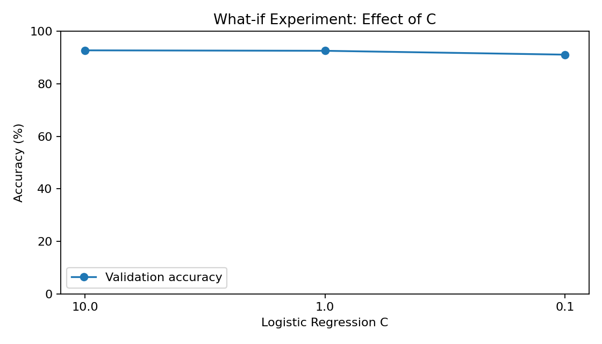
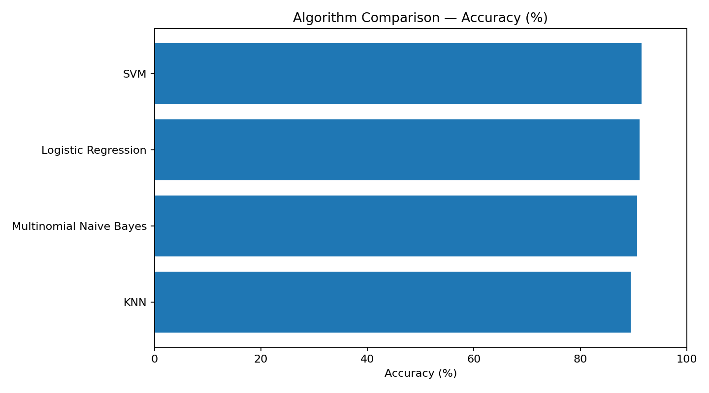
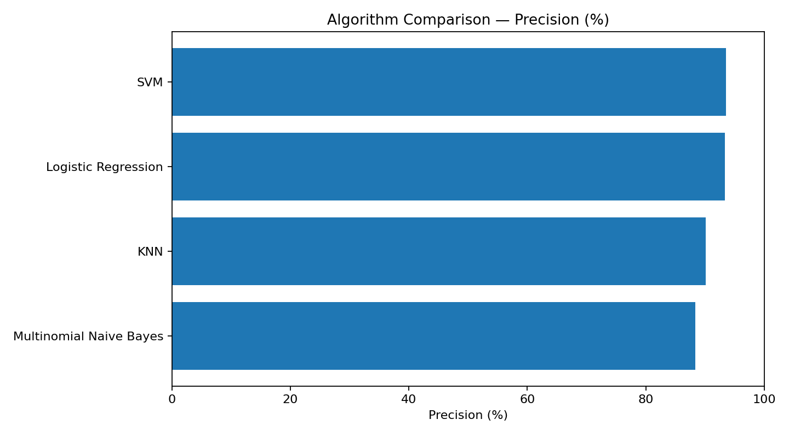
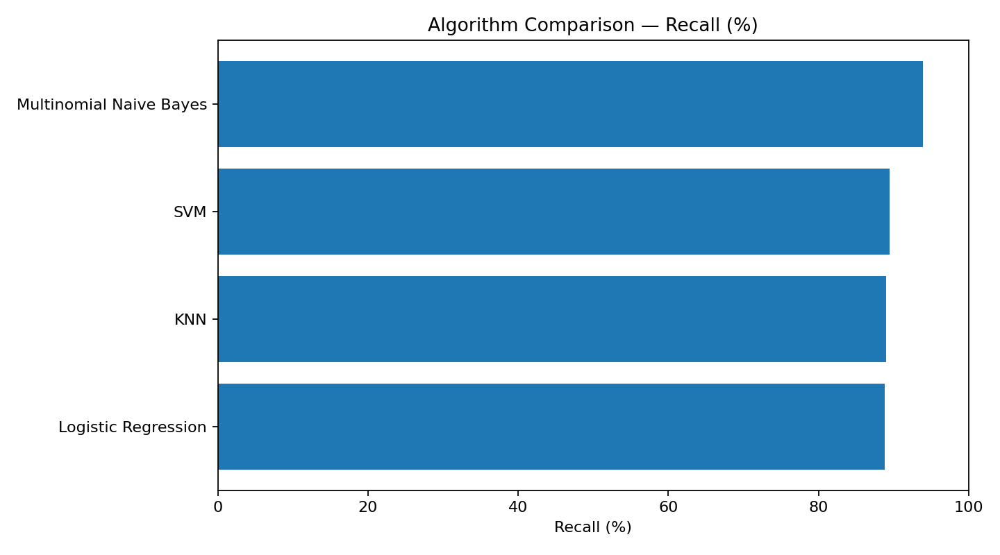
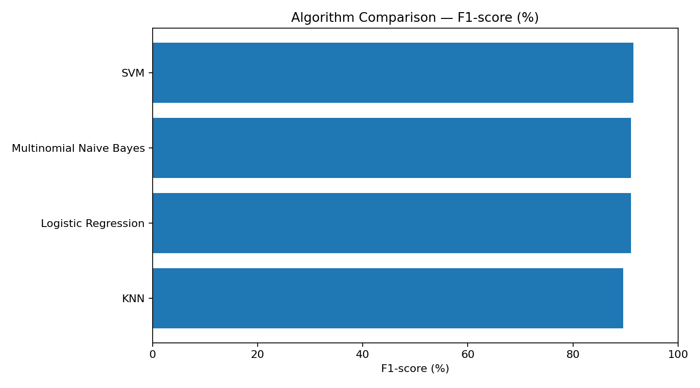
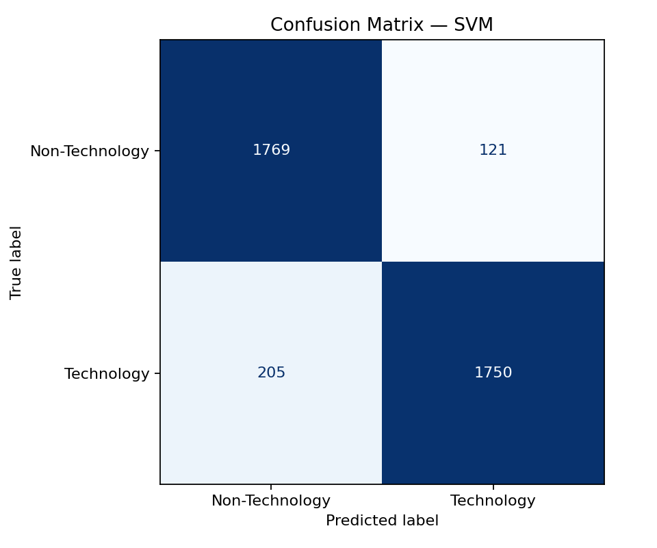
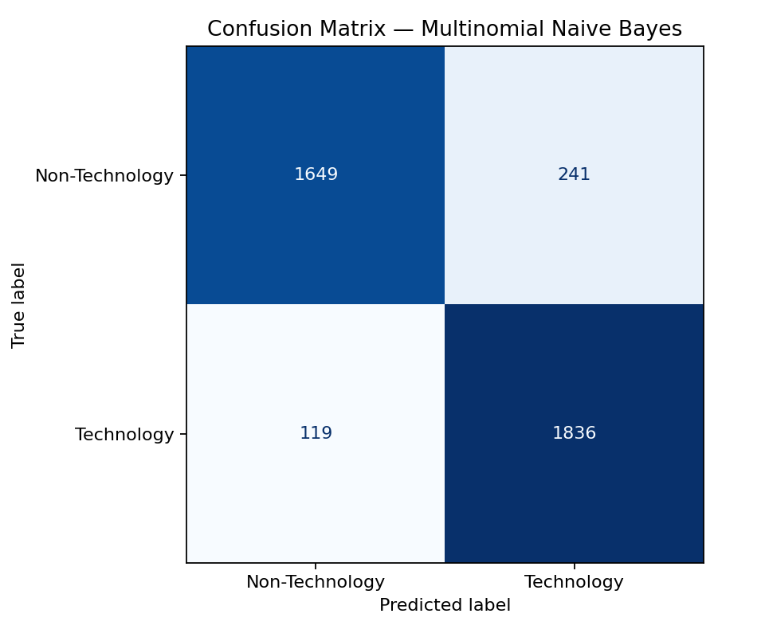
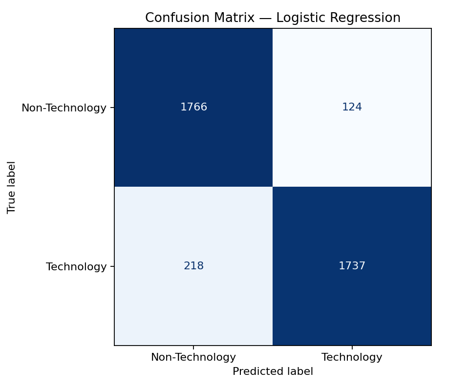
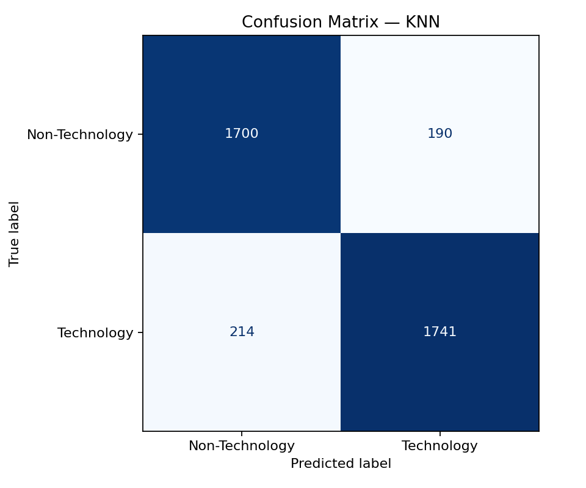

1. Experiment overview
This project turns selected 20 Newsgroups topics into a binary text classification task. Technology is the positive class (label 1); Non-Technology is the negative class (label 0). All four classifiers use the same official train/test subsets and a TF-IDF pipeline.
- Text preparation: remove headers, footers, and quoted text; lowercase; remove English stop words.
- Features: TF-IDF unigrams and bigrams, up to 30,000 features, with sublinear term frequency.
- Evaluation: held-out test accuracy, positive-class precision, recall, F1, training time, and prediction time.
- Timing note: timings are the recorded values for this run and can vary with hardware and software environment.
Technology categories: comp.graphics, comp.os.ms-windows.misc, comp.sys.ibm.pc.hardware, comp.sys.mac.hardware, comp.windows.x.
Non-Technology categories: rec.sport.baseball, rec.sport.hockey, sci.space, talk.politics.misc, misc.forsale.
2. Test-set algorithm comparison
Models are ranked by positive-class F1, with accuracy as a secondary sort key. Precision, recall, and F1 refer to the Technology class.
| Rank | Algorithm | Accuracy | Precision | Recall | F1-score | Training (s) | Prediction (s) |
|---|---|---|---|---|---|---|---|
| 1 | SVM | 91.52% | 93.53% | 89.51% | 91.48% | 0.901 | 0.213 |
| 2 | Multinomial Naive Bayes | 90.64% | 88.40% | 93.91% | 91.07% | 0.860 | 0.214 |
| 3 | Logistic Regression | 91.11% | 93.34% | 88.85% | 91.04% | 0.908 | 0.220 |
| 4 | KNN | 89.49% | 90.16% | 89.05% | 89.60% | 0.849 | 0.572 |
SVM Best F1 and accuracy
Accuracy 91.52% · Precision 93.53% · Recall 89.51% · F1 91.48%.
Highest overall F1 in this run, with the highest precision and accuracy. The slightly lower recall means it misses more Technology items than the Naive Bayes model.
Multinomial Naive Bayes
Accuracy 90.64% · Precision 88.40% · Recall 93.91% · F1 91.07%.
Highest recall of the four: it identifies the largest share of Technology documents, while its lower precision indicates more false Technology predictions.
Logistic Regression
Accuracy 91.11% · Precision 93.34% · Recall 88.85% · F1 91.04%.
Its precision is close to SVM, but lower recall leads to an F1 score 0.44 percentage points below SVM in this test run.
K-Nearest Neighbors
Accuracy 89.49% · Precision 90.16% · Recall 89.05% · F1 89.60%.
Lowest F1 and accuracy in this comparison. Its measured prediction time, 0.572 seconds, is also longer than the other three model runs.
Based on test-set F1, SVM is the recommended model for this measured comparison. If maximizing Technology recall is more important than precision, Multinomial Naive Bayes is the alternative to consider.
3. Logistic Regression what-if experiment
The C parameter controls inverse regularization strength:
smaller values regularize more strongly. C was selected using a
stratified 20% validation split from the training set; the official
test set was not used to select it.
| C | Validation accuracy | Validation F1 | Training time (s) |
|---|---|---|---|
| 10.0 | 92.73% | 92.78% | 0.727 |
| 1.0 | 92.56% | 92.61% | 0.731 |
| 0.1 | 91.09% | 91.20% | 0.670 |
Selection: C = 10.0 ranked first by validation F1 (92.78%), then validation accuracy (92.73%). This selected value was used to fit the final Logistic Regression model on all training data.

4. Result charts and confusion matrices
Open any image in a new tab to inspect it at full size. Confusion matrix axes show Non-Technology and Technology.
















5. Commands to reproduce the experiment
macOS / Linux: create environment, install dependencies, and run
cd "/path/to/Technology_IR_Final_Project"
python3 --version
python3 -m venv venv
source venv/bin/activate
python -m pip install --upgrade pip
pip install -r requirements.txt
python main.pyFor an existing environment, activate it and run:
cd "/path/to/Technology_IR_Final_Project"
source venv/bin/activate
python main.pyWindows PowerShell / Command Prompt
cd "path\to\Technology_IR_Final_Project"
py -m venv venv
venv\Scripts\activate
python -m pip install --upgrade pip
pip install -r requirements.txt
python main.pyOpen this report and inspect the saved CSVs (macOS)
open results/index.html
column -s, -t < results/algorithm_comparison.csv
column -s, -t < what_if_experiment/logistic_regression_C_comparison.csv
On the first run, scikit-learn downloads the 20 Newsgroups data, so
internet access is required. Running python main.py
regenerates the CSVs and charts from the current environment.
6. Files produced by the experiment
results/algorithm_comparison.csv— ranked metrics and recorded timings for all four classifiers.results/accuracy_comparison.png,results/precision_comparison.png,results/recall_comparison.png, andresults/f1_score_comparison.png— comparison charts.results/confusion_matrix_*.png— one confusion matrix for each classifier.what_if_experiment/logistic_regression_C_comparison.csv— validation results for C = 0.1, 1.0, and 10.0.what_if_experiment/C_parameter_accuracy.png— validation accuracy chart for the C experiment.